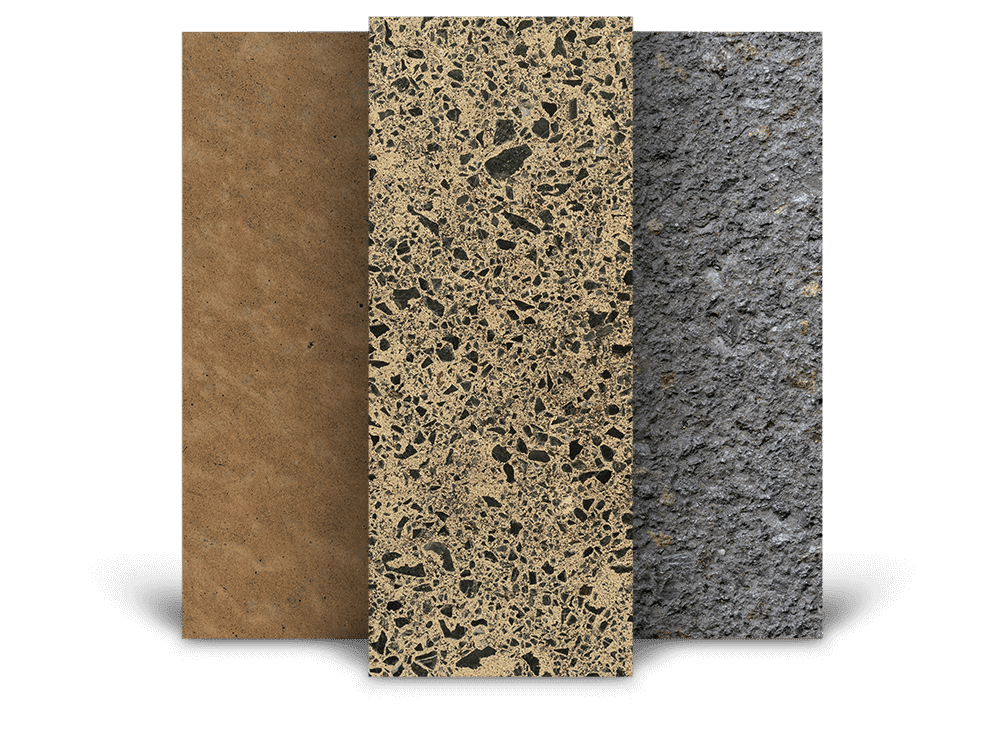

Choose your texture.
The most common consideration is how easy the floor is to clean and how safe and non-slip your
exterior surface is.
Select one of the options below. We recommend, however, that you talk to your contractor first
about
the right texture for your project.

Recommended concrete textures
for
{NOME DINAMICO}
SMOOTH SURFACE

Smooth Trowel
Standard internal finish
for residential floors to generate a
smooth concrete surface.

Light Trowel
Smooth finish for
residential floors with trowel marks visible
on the surface.

Natural Polish
Generates a very smooth
surface with no aggregate visible.

Salt and Pepper Grind
Generates a very smooth
surface with very fine aggregate
visible.

Light Grind
Generates a very smooth
surface with fine aggregate visible.

Medium Grind
Generates a very smooth
surface with medium aggregate visible.

Heavy Grind
Generates a very smooth
surface with significant aggregate
visible.